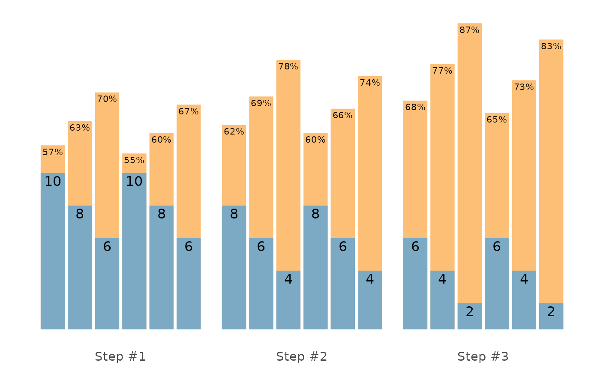
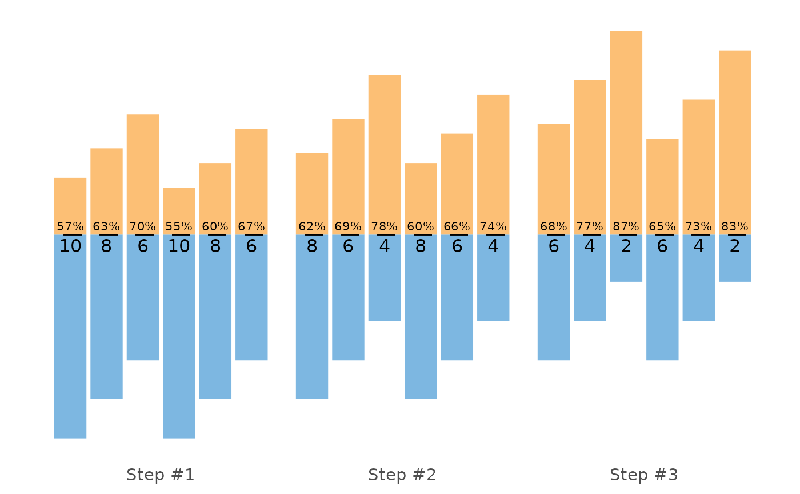

Functions for creating ggplot2 plot of the Set and Reps Scheme
Usage
# S3 method for class 'STMr_scheme'
plot(x, type = "bar", font_size = 14, perc_str = "%", ...)Arguments
- x
STMr_schemeobject. See examples- type
Type of plot. Options are "bar" (default), "vertical", and "fraction"
- font_size
Numeric. Default is 14
- perc_str
Percent string. Default is "%". Use "" to have more space on graph
- ...
Forwarded to
geom_bar_textandgeom_fit_textfunctions. Can be used to se the highest labels size, for example, usingsize=5. See documentation for these two packages for more info
Examples
scheme <- scheme_wave(
reps = c(10, 8, 6, 10, 8, 6),
# Adjusting sets to use lower %1RM (RIR Inc method used, so RIR adjusted)
adjustment = c(4, 2, 0, 6, 4, 2),
vertical_planning = vertical_linear,
vertical_planning_control = list(reps_change = c(0, -2, -4)),
progression_table = progression_RIR_increment,
progression_table_control = list(volume = "extensive")
)
plot(scheme)

plot(scheme, type = "vertical")
plot(scheme, type = "fraction")
